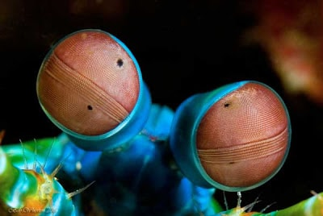

Gracias a un grupo de investigadores australianos de la universidad de Queensland dirigidos por el profesor a cargo Justin Marshall se ha puesto en marcha un proyecto para crear una cámara que replique la visión de la langosta mantis de forma artificial, esto viene dado ya que la capacidad de detección de luz polarizada de este animal puede permitir diferenciar algunos tejidos cancerosos de los sanos.
Así como detectar la actividad cerebral . Por un lado esto permitirá detectar más fácilmente y sin procesos invasivos posibles cánceres. Por otro lado permitirá avances en neurociencia y en la investigación del funcionamiento de la mente al observar mejor el comportamiento del cerebro. Estos avances han llevado también al desarrollo de cámaras mejoradas en los coches autónomos permitiéndoles ver incluso en condiciones de niebla densa dando un gran paso en el desarrollo y mejoría de estos vehículos.
